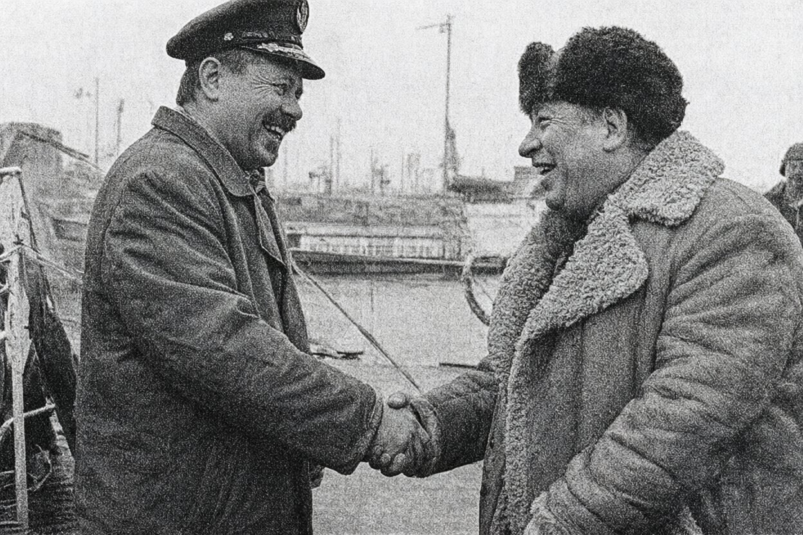

Одеська фірма «Акватрейд-Сервіс» придбала суховантаж, що понад двадцять років ходив під іншим прапором. Судно, збудоване 1974 року, після огляду та поточного ремонту піднімає прапор Белізу і виходить на лінії Чорного й Середземного морів. Власником значиться компанія Liman Star Shipping Ltd, управління — в Одесі.
«Нам потрібне судно, яке можна швидко запустити в роботу, — розповів директор фірми Станіслав Гордієнко. — Корабель надійний, команду підібрали своїх, перевірених». Командує судном капітан Віктор Гаврилюк, з яким директор вчився в одному училищі. За словами обох, цей збіг на користь справі: «Довіра в нашому ремеслі вирішує багато».
Перший рейс — до Варни з вантажем зернових.
Після літньої кризи ринок старого тоннажу просів. За даними брокерів Одеси та Іллічівська, ціни на суховантажі вантажопідйомністю 2–3 тис. тонн, побудовані у 1972–1978 роках, зараз становлять:
| Тип судна | Рік побудови | Ціна, тис. $ |
|---|---|---|
| Суховантаж 2000–2500 т | 1972–1975 | 200–250 |
| Суховантаж 2500–3000 т | 1974–1978 | 240–300 |
| Суховантаж 2000–3000 т (після ремонту, під «зручним» прапором) | 1972–1978 | 230–300 |
«Після серпня — ще мінус 15%, — підтвердив один із брокерів. — Покупців немає, продавці чекають весни». Фрахтові ставки на чорноморських лініях, за оцінкою фахівців, лишаються нижчими торішніх приблизно на третину.
Банк «Південна Пальміра» подав до господарського суду позов до ТОВ «Акватрейд-Сервіс» про стягнення 1,2 млн грн. Підставою, за інформацією з суду, є прострочена заборгованість за кредитним договором. Дату розгляду ще не призначено. У фірмі коментувати позов відмовилися.
Вирізки з підшивок, фото 1995 року — друкарське, оригіналу немає. — А. к. гр. № 2